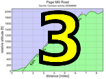

|
 |
 |
| Pat Parseghian reaches the summit of the tough Sierra Road climb (Ron Brunner) |
Thanks to the great crowd who came out to ride challenging Sierra Road!
In the hybrid-electric division, Bill Bushnell returned to demolish the course in 14:45, 2:02 faster than Chris Horner in the Tour of California this year (Chris' time was 16:47).
In the men's division, Jesse Miller-Smith, the Strava KOM up Old La Honda, finished first this week. His time of 21:15 fell a bit short of the existing KOM by professional racer Tyler Wren, however. Tyler set his time during the Tour of California stage. Second on the day was a fantastic Carl Nielson. Murray Swanson of Pen Velo came in next, ahead of Tim Clark who just nipped Steve Peck at the line when Steve misjudged the finish location.
It was a very competitive women's field as Pen Velo's Helen Casabona finished just ahead of Kelly Crowley, who is coming off a fantastic season racing at the elite level. Lisa Penzel was third.
Pen Velo's excellent results gave them the top score of the day, but the Sisters and Misters of No Mercy and Bike Trip also both scored over 350 points. It was an excellent showing by a lot of teams today in what promises to be an exceptionally fierce Low-Key fight for the top team spot.
A good showing, as well, by juniors today with Justin Leong, 13-14, leading the junior group. Riley Auten also rode a super-strong climb, and Sprocket Downing, only 7, pushed his father up the hill on their super-slick, tricked out Calfee tandem.
Special thanks to all the volunteers who did a super job this week!!!
Strava T-shirt qualifiers indicated with orange background.
| pl | # | name | team | cat | time | mph | fph | score |
|---|---|---|---|---|---|---|---|---|
| 1 | 6 | Bill Bushnell | Low-Key | Its All About The Bike | 14:45 | 14.89 | 7155 | 123.03 |
| pl | # | name | team | cat | time | mph | fph | score |
|---|---|---|---|---|---|---|---|---|
| 1 | 244 | Jesse Miller-Smith | Marc Pro - Strava | Open | 21:15 | 10.33 | 4967 | 138.08 |
| 2 | 248 | Carl Nielson | Sr's & Mr's of No Mercy | M50+ | 22:08 | 9.92 | 4768 | 132.57 |
| 3 | 140 | Murray Swanson | Pen Velo/Pomodoro | 40+ | 23:09 | 9.49 | 4559 | 126.75 |
| 4 | 44 | Tim Clark | Low-Key | 40+ | 23:50 | 9.21 | 4428 | 123.11 |
| 5 | 114 | Steve Peck | Silicon Valley Triathlon | 45+ | 23:52 | 9.20 | 4422 | 122.94 |
| 6 | 7 | James Porter | Western Wheelers | 3 | 24:10 | 9.09 | 4367 | 121.41 |
| 7 | 74 | Rich Hill | LGBRC | 45+ | 24:14 | 9.06 | 4355 | 121.08 |
| 8 | 226 | Tom Gardin | 45+ | 24:16 | 9.05 | 4349 | 120.91 | |
| 9 | 33 | Bill Brier | Team Fremont FFBC p/b Chipotle | 45+ | 24:17 | 9.04 | 4346 | 120.83 |
| 10 | 59 | Mark Edwards | Bike Trip/Symantec | 50+ | 24:27 | 8.98 | 4317 | 120.01 |
| 11 | 96 | Bennett Chi Lee | Speedy Bees | 45+/Ponytail | 24:37 | 8.92 | 4287 | 119.19 |
| 12 | 113 | Christian Paquet | Doogie | 24:46 | 8.87 | 4261 | 118.47 | |
| 13 | 246 | Clark M. Natwick | Pen Velo/Pomodoro | 50+ | 24:54 | 8.82 | 4239 | 117.84 |
| 14 | 225 | Chris Furgiuele | Dolce Vita Cycling | 35+ | 24:56 | 8.81 | 4233 | 117.68 |
| 15 | 237 | Justin Lucke | LGBRC | Plant Based | 24:59 | 8.79 | 4224 | 117.44 |
| 16 | 144 | Nils Tikkanen | Bike Trip/Symantec | Honey Badger | 25:14 | 8.70 | 4183 | 116.28 |
| 17 | 213 | Andy Crews | Diablo | 40+ | 25:16 | 8.69 | 4177 | 116.13 |
| 18 | 261 | Joe Sullivan | San Jose Bike Club | 35+ | 25:20 | 8.67 | 4166 | 115.82 |
| 19 | 273 | David Nader | Pen Velo/Pomodoro | 40+ | 25:28 | 8.62 | 4144 | 115.22 |
| 20 | 78 | Tick Houk | The Brown Zone | 50+ | 25:36 | 8.58 | 4123 | 114.62 |
| 21 | 251 | Dan Perry | Bike Trip/Symantec | 40+ | 25:40 | 8.56 | 4112 | 114.32 |
| 22 | 240 | Paul McKenzie | Marc Pro - Strava | 55+ | 25:58 | 8.46 | 4064 | 113.00 |
| 23 | 201 | Michael Barnes | 26:04 | 8.42 | 4049 | 112.56 | ||
| 24 | 53 | J.D. Daniels | Eden Bikes | 35+ | 26:08 | 8.40 | 4039 | 112.28 |
| 25 | 94 | Jim Langley | Bike Trip/Symantec | 55+ | 26:12 | 8.38 | 4028 | 111.99 |
| 26 | 106 | McLovin | The Brown Zone | 1 | 26:20 | 8.34 | 4008 | 111.42 |
| 27 | 80 | Martin Hyland | Western Wheelers | 55+ | 26:29 | 8.29 | 3985 | 110.79 |
| 28 | 133 | Dai Sieh | The Brown Zone | Robusto | 26:42 | 8.22 | 3953 | 109.89 |
| 29 | 216 | Mark Debbage | 40+ | 26:58 | 8.14 | 3914 | 108.81 | |
| 30 | 223 | Bill Dvorak | 55+ | 26:58 | 8.14 | 3914 | 108.81 | |
| 31 | 37 | Ronald Brunner | The Brown Zone | Low-Key | 27:05 | 8.11 | 3897 | 108.34 |
| 32 | 34 | Adam Brinkman | Dirkless | 30+ | 27:09 | 8.09 | 3887 | 108.07 |
| 33 | 233 | Alexander Komlik | San Jose Bike Club | 45+ | 27:11 | 8.08 | 3883 | 107.94 |
| 34 | 64 | TOM FERREIRA | Eden Bikes | 45+ | 27:17 | 8.05 | 3868 | 107.54 |
| 35 | 95 | Dean Larson | The Brown Zone | 45+ | 27:22 | 8.02 | 3857 | 107.22 |
| 36 | 52 | Rob Cosaro | Doogie | 50+ | 27:26 | 8.00 | 3847 | 106.96 |
| 37 | 70 | Bruce Gardner | Sr's & Mr's of No Mercy | 40+ | 27:33 | 7.97 | 3831 | 106.50 |
| 38 | 242 | Peter Mehlitz | Too-Old-To-Count | 27:34 | 7.97 | 3829 | 106.44 | |
| 39 | 257 | Takanobu Seimiya | Nikon Cycling Club | 40+ | 27:37 | 7.95 | 3822 | 106.25 |
| 40 | 105 | Russ McCrary | Sr's & Mr's of No Mercy | 50+ | 27:40 | 7.94 | 3815 | 106.05 |
| 41 | 239 | Paul Marshall | Quadzilla Racing | 35+ | 27:43 | 7.92 | 3808 | 105.86 |
| 42 | 85 | George Janour | Bike Trip/Symantec | 40+ | 27:56 | 7.86 | 3778 | 105.04 |
| 43 | 104 | Scott Martin | Bike Trip/Symantec | 50+ | 27:57 | 7.86 | 3776 | 104.98 |
| 44 | 143 | Phil Theodore | Will Ride For Chocolate | 45+ | 28:08 | 7.81 | 3751 | 104.30 |
| 45 | 156 | Matt Wocasek | Bike Trip/Symantec | 45+ | 28:11 | 7.79 | 3745 | 104.11 |
| 46 | 148 | David Vrane | Sr's & Mr's of No Mercy | 45+ | 28:18 | 7.76 | 3729 | 103.68 |
| 47 | 267 | Alan Weatherall | San Jose Bike Club | 28:20 | 7.75 | 3725 | 103.56 | |
| 48 | 112 | Shance Ordell | Western Wheelers | 35+ 123 | 28:40 | 7.66 | 3682 | 102.35 |
| 49 | 119 | Thomas Rabedeau | SLACer | 50+ | 28:46 | 7.63 | 3669 | 102.00 |
| 50 | 127 | Naoto Sato | 45+ | 28:47 | 7.63 | 3667 | 101.94 | |
| 51 | 20 | Ron Abidog | 40+ | 28:52 | 7.61 | 3656 | 101.65 | |
| 52 | 268 | Jens Weber | Doogie | 30+ | 29:01 | 7.57 | 3637 | 101.12 |
| 53 | 12 | Will von Kaenel | LGBRC | 50+ | 29:08 | 7.54 | 3623 | 100.72 |
| 54 | 202 | Stephen Berg | Western Wheelers | 30+ | 29:11 | 7.52 | 3616 | 100.54 |
| 55 | 215 | Vince Cummings | Alberto's Steak House | 50+ | 29:11 | 7.52 | 3616 | 100.54 |
| 56 | 264 | Mike Urbina | Alberto's Steak House | 50+ | 29:18 | 7.49 | 3602 | 100.14 |
| 57 | 121 | Carlos Reyes | 20+ | 29:23 | 7.47 | 3592 | 99.86 | |
| 58 | 269 | Donald Lee | 40+ | 29:28 | 7.45 | 3582 | 99.58 | |
| 59 | 224 | Joe Fabris | Plus 3 | 50+ | 29:31 | 7.44 | 3576 | 99.41 |
| 60 | 205 | Marco Boldt | 30+ | 29:40 | 7.40 | 3558 | 98.90 | |
| 61 | 235 | Mark LaForge | SSL Cycling Club Club | 50+ | 29:55 | 7.34 | 3528 | 98.08 |
| 62 | 203 | Brent Bertsch | San Jose Bike Club | 30+ | 29:59 | 7.32 | 3520 | 97.86 |
| 63 | 206 | Carl Butler | Sr's & Mr's of No Mercy | 55+ | 30:06 | 7.30 | 3506 | 97.48 |
| 64 | 132 | Jeff Shute | 30+ | 30:15 | 7.26 | 3489 | 97.00 | |
| 65 | 30 | George Bonanto | 30+ | 30:19 | 7.24 | 3481 | 96.78 | |
| 66 | 97 | Justin Leong | San Jose Bike Club | Junior | 30:19 | 7.24 | 3481 | 96.78 |
| 67 | 24 | MichaelsJ. Andalora | 55+ | 30:27 | 7.21 | 3466 | 96.36 | |
| 68 | 232 | Franz Kelsch | Alberto's Steak House | 60+ | 30:31 | 7.20 | 3458 | 96.15 |
| 69 | 81 | Brandon Iles | 25+ | 30:38 | 7.17 | 3445 | 95.78 | |
| 70 | 211 | Philip Clark | 25+ | 30:38 | 7.17 | 3445 | 95.78 | |
| 71 | 134 | Peter Smith | 55+ | 30:39 | 7.16 | 3443 | 95.73 | |
| 72 | 120 | Vinay Ravuri | Georgia Tech | 30:41 | 7.16 | 3440 | 95.63 | |
| 73 | 35 | Nic Brummell | Atlas | 50+ | 30:42 | 7.15 | 3438 | 95.58 |
| 74 | 272 | Roger Helmers | Central Valley Velo | 55+ | 31:23 | 7.00 | 3363 | 93.49 |
| 75 | 83 | Tim Irvine | LGBRC | 40+ | 31:31 | 6.97 | 3349 | 93.10 |
| 76 | 266 | Jonathan Walden | 45+ | 31:37 | 6.95 | 3338 | 92.80 | |
| 77 | 274 | Riley Auten | Junior | 31:38 | 6.94 | 3336 | 92.76 | |
| 78 | 249 | Jeffrey Opp | Doogie | 30+ | 31:48 | 6.91 | 3319 | 92.27 |
| 79 | 51 | Richard Contreras | Team Rhus | 50+ | 32:04 | 6.85 | 3291 | 91.50 |
| 80 | 270 | Jonathan Sek | Cat 2 | 55+ | 32:05 | 6.84 | 3290 | 91.45 |
| 81 | 222 | Tom Driscoll | Western Wheelers | 55+ | 32:05 | 6.84 | 3290 | 91.45 |
| 82 | 145 | Bruno Tourette | Palo Verde Velo | 35+ | 32:17 | 6.80 | 3269 | 90.89 |
| 83 | 55 | Jon Degenhardt | ACTC | 50+ | 32:46 | 6.70 | 3221 | 89.55 |
| 84 | 108 | Paul Melville | Doogie | 60+ | 32:55 | 6.67 | 3206 | 89.14 |
| 85 | 116 | Thomas Preisler | LGBRC | 55+ | 33:04 | 6.64 | 3192 | 88.73 |
| 86 | 259 | Trey Sloan | 40+ | 33:12 | 6.61 | 3179 | 88.38 | |
| 87 | 255 | Russ Reynolds | Plus 3 | 40+ | 33:16 | 6.60 | 3173 | 88.20 |
| 88 | 228 | Andre Gueziec | Palo Verde Velo | 45+ | 33:25 | 6.57 | 3158 | 87.81 |
| 89 | 153 | Jim Williams | Alberto's Steak House | 60+ | 33:29 | 6.56 | 3152 | 87.63 |
| 90 | 115 | Ryan Powell | Team Joe Karbowski | 35+ | 33:39 | 6.53 | 3136 | 87.20 |
| 91 | 243 | Edward Miller | SLACer | 70+ | 33:41 | 6.52 | 3133 | 87.11 |
| 92 | 91 | Mark King | Sr's & Mr's of No Mercy | Recumbent Trike | 33:51 | 6.49 | 3118 | 86.68 |
| 93 | 238 | Thyna Mao | 35+ | 33:57 | 6.47 | 3109 | 86.43 | |
| 94 | 231 | John D Kastel | Death Valley | 45+ | 34:22 | 6.39 | 3071 | 85.38 |
| 95 | 160 | Craig Peters | Tradewinds Cycling Team | 40+ | 34:38 | 6.34 | 3047 | 84.72 |
| 96 | 260 | Craig Stevens | Go Blue! | 35+ | 34:41 | 6.33 | 3043 | 84.60 |
| 97 | 204 | Brian Birkeland | Alameda Velo | 45+ | 34:54 | 6.29 | 3024 | 84.07 |
| 98 | 28 | Jan Berka | Twin 6 | 45+ | 35:05 | 6.26 | 3008 | 83.63 |
| 99 | 65 | Greg Finley | 30+ | 35:23 | 6.21 | 2983 | 82.93 | |
| 100 | 46 | Kevin Colagiovanni | Team DUD | 25+ | 35:46 | 6.14 | 2951 | 82.04 |
| 101 | 128 | Wink Saville | 60+ | 36:17 | 6.05 | 2909 | 80.87 | |
| 102 | 253 | Mark Pryor | Alameda Velo | 55+ | 36:34 | 6.01 | 2886 | 80.24 |
| 103 | 36 | Rich Brunner | Santa Clara | 40+ | 36:42 | 5.98 | 2876 | 79.95 |
| 104 | 68 | Stephen Fong | San Jose Bike Club | 5 | 36:46 | 5.97 | 2871 | 79.81 |
| 105 | 247 | Ronald Ng | bikeforums.net | 45+ | 37:03 | 5.93 | 2849 | 79.19 |
| 106 | 39 | Kley Cardona | Alberto's Steak House | 50+ | 37:12 | 5.90 | 2837 | 78.88 |
| 107 | 236 | George Lee | 30+ | 37:49 | 5.81 | 2791 | 77.59 | |
| 108 | 146 | Luis Valente | Palo Verde Velo | 50+ | 38:11 | 5.75 | 2764 | 76.84 |
| 109 | 98 | Simon Leong | San Jose Bike Club | 45+ | 38:59 | 5.63 | 2707 | 75.27 |
| 110 | 220 | Eric Downing | C. Downing: Tandem | Tandem 51 | 39:39 | 5.54 | 2662 | 74.00T |
| 111 | 221 | Sprocket Downing | C. Downing: Tandem | Tandem 7 | 39:39 | 5.54 | 2662 | 74.00T |
| 112 | 29 | Sachin Bhatia | 30+ | 40:24 | 5.44 | 2612 | 72.63 | |
| 113 | 92 | KP | The Brown Zone | None Of Your Bee'S Wax | 45:40 | 4.81 | 2311 | 64.25M |
| 114 | 207 | Fred Butts | Low-Key | 65+ | 47:29 | 4.62 | 2223 | 61.79 |
| 115 | 69 | John Freeman | Dolce Vita Cycling | 4 | 58:00 | 3.79 | 1820 | 50.59M |
| pl | # | name | team | cat | time | mph | fph | score |
|---|---|---|---|---|---|---|---|---|
| 1 | 40 | Helen Casabona | Pen Velo/Pomodoro | 50+ | 28:24 | 7.73 | 3716 | 124.93 |
| 2 | 214 | Kelly Crowley | Metromint | 28:35 | 7.68 | 3692 | 124.13 | |
| 3 | 250 | Lisa Penzel | 45+ | 29:18 | 7.49 | 3602 | 121.09 | |
| 4 | 8 | Janet Martinez | Sr's & Mr's of No Mercy | 40+ | 30:45 | 7.14 | 3432 | 115.38 |
| 5 | 75 | Laura Hipp | Western Wheelers | 4 | 30:58 | 7.09 | 3408 | 114.57 |
| 6 | 271 | Holly Harris | Sr's & Mr's of No Mercy | 45+ | 32:44 | 6.71 | 3224 | 108.39 |
| 7 | 62 | Lori Fabris | Plus 3 | 50+ | 34:03 | 6.45 | 3100 | 104.20 |
| 8 | 256 | Karen Rhodes | 55+ | 38:16 | 5.74 | 2758 | 92.72 | |
| 9 | 60 | Lisa Emmerich | Sr's & Mr's of No Mercy | 50+ | 38:20 | 5.73 | 2753 | 92.56 |
| 10 | 265 | Janet Wagner | Sr's & Mr's of No Mercy | 50+ | 38:41 | 5.68 | 2728 | 91.72 |
| 11 | 217 | Danielle Dettling | 30+ | 40:25 | 5.43 | 2611 | 87.78 | |
| 12 | 4 | Pat Parseghian | 55+ | 48:24 | 4.54 | 2181 | 73.31 |
| pl | team | score | riders |
|---|---|---|---|
| 1 | Pen Velo/Pomodoro | 369.51 | Murray Swanson, Clark M. Natwick, David Nader, Helen Casabona |
| 2 | Sr's & Mr's of No Mercy | 356.34 | Carl Nielson, Bruce Gardner, Russ McCrary, David Vrane, Carl Butler, Janet Martinez, Holly Harris, Mark King, Lisa Emmerich, Janet Wagner |
| 3 | Bike Trip/Symantec | 350.61 | Mark Edwards, Nils Tikkanen, Dan Perry, Jim Langley, George Janour, Scott Martin, Matt Wocasek |
| 4 | Western Wheelers | 346.78 | James Porter, Martin Hyland, Shance Ordell, Stephen Berg, Laura Hipp, Tom Driscoll |
| 5 | LGBRC | 339.24 | Rich Hill, Justin Lucke, Will von Kaenel, Tim Irvine, Thomas Preisler |
| 6 | The Brown Zone | 335.93 | Tick Houk, McLovin, Dai Sieh, Ronald Brunner, Dean Larson, KP |
| 7 | San Jose Bike Club | 327.32 | Joe Sullivan, Alexander Komlik, Alan Weatherall, Brent Bertsch, Justin Leong, Stephen Fong, Simon Leong |
| 8 | Doogie | 326.55 | Christian Paquet, Rob Cosaro, Jens Weber, Jeffrey Opp, Paul Melville |
| 9 | Low-Key | 307.94 | Bill Bushnell, Tim Clark, Fred Butts |
| 10 | Alberto's Steak House | 296.83 | Vince Cummings, Mike Urbina, Franz Kelsch, Jim Williams, Kley Cardona |
| 11 | Plus 3 | 291.81 | Joe Fabris, Russ Reynolds, Lori Fabris |
| 12 | 289.56 | Jeff Shute, George Bonanto, Brandon Iles, Philip Clark, Wink Saville, Pat Parseghian | |
| 13 | Palo Verde Velo | 255.54 | Bruno Tourette, Andre Gueziec, Luis Valente |
| 14 | Marc Pro - Strava | 251.08 | Jesse Miller-Smith, Paul McKenzie |
| 15 | Eden Bikes | 219.82 | J.D. Daniels, TOM FERREIRA |
| 16 | SLACer | 189.11 | Thomas Rabedeau, Edward Miller |
| 17 | Dolce Vita Cycling | 168.27 | Chris Furgiuele, John Freeman |
| 18 | Alameda Velo | 164.32 | Brian Birkeland, Mark Pryor |
| 19 | C. Downing: Tandem | 148.00 | Eric Downing, Sprocket Downing |
| 20 | Metromint | 124.13 | Kelly Crowley |
| 21 | Silicon Valley Triathlon | 122.94 | Steve Peck |
| 22 | Team Fremont FFBC p/b Chipotle | 120.83 | Bill Brier |
| 23 | Speedy Bees | 119.19 | Bennett Chi Lee |
| 24 | Diablo | 116.13 | Andy Crews |
| 25 | Dirkless | 108.07 | Adam Brinkman |
| 26 | Nikon Cycling Club | 106.25 | Takanobu Seimiya |
| 27 | Quadzilla Racing | 105.86 | Paul Marshall |
| 28 | Will Ride For Chocolate | 104.30 | Phil Theodore |
| 29 | SSL Cycling Club Club | 98.08 | Mark LaForge |
| 30 | Georgia Tech | 95.63 | Vinay Ravuri |
| 31 | Atlas | 95.58 | Nic Brummell |
| 32 | Central Valley Velo | 93.49 | Roger Helmers |
| 33 | Team Rhus | 91.50 | Richard Contreras |
| 34 | Cat 2 | 91.45 | Jonathan Sek |
| 35 | ACTC | 89.55 | Jon Degenhardt |
| 36 | Team Joe Karbowski | 87.20 | Ryan Powell |
| 37 | Death Valley | 85.38 | John D Kastel |
| 38 | Tradewinds Cycling Team | 84.72 | Craig Peters |
| 39 | Go Blue! | 84.60 | Craig Stevens |
| 40 | Twin 6 | 83.63 | Jan Berka |
| 41 | Team DUD | 82.04 | Kevin Colagiovanni |
| 42 | Santa Clara | 79.95 | Rich Brunner |
| 43 | bikeforums.net | 79.19 | Ronald Ng |